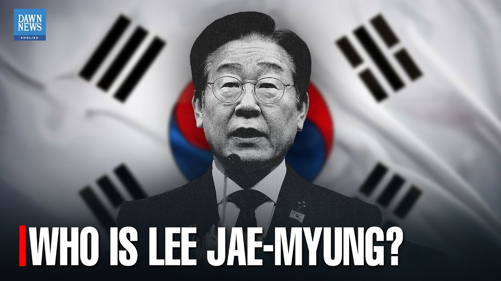

【韩国大选：李在明是谁？| 黎明新闻英文版】
Summary: South Korea is holding a snap presidential election on June 3rd after the former president was removed from office over his controversial martial law order. The leading candidate is Lee Jae-myung from the Democratic Party, campaigning on economic reform, political stability, and work-life balance. He promises AI investment, R&D funding, support for small businesses, improved foreign ties, reduced North Korea tensions, political reforms, a shorter workweek, demographic solutions, and climate action.
摘要： 韩国将于6月3日提前举行总统大选，此前前总统因争议性戒严令被罢免。主要候选人、民主党的李在明以经济改革、政治稳定和工作生活平衡为竞选纲领。他承诺投资人工智能、增加研发资金、扶持小企业、改善外交关系、缓和朝韩紧张局势、推动政治改革、缩短工作周、解决人口问题并采取气候行动。

⏱️ Estimated Reading Time: 5 min
South Korea is holding a snap presidential election on June 3rd after the former president was removed from office over his controversial martial law order.
韩国将于6月3日提前举行总统大选，此前前总统因争议性戒严令被罢免。
The leading candidate is Lee Jae-myung from the Democratic Party.
主要候选人是民主党的李在明。
At 61, Lee is campaigning on a broad agenda of economic reform, political stability and work-life balance.
61岁的李在明以经济改革、政治稳定和工作生活平衡为广泛竞选纲领。
Here's what he's promising.
以下是他的承诺。
If elected on the economy, Lee plans to boost investment in artificial intelligence, gradually increase funding for research and development, and make defense a core industry.
在经济方面，李在明计划增加人工智能投资，逐步提高研发资金，并将国防列为核心产业。
He's also pledging support for small businesses and the content sector to grow South Korea's soft power.
他还承诺支持小企业和内容产业，以提升韩国的软实力。
On foreign policy, Lee aims to improve ties with the global south, strengthen partnerships with the European Union, and reduce tensions with North Korea while still pursuing denuclearization and the handover of wartime operational control from the United States.
在外交政策上，李在明旨在改善与全球南方国家的关系，加强与欧盟的合作，并缓和与朝鲜的紧张局势，同时继续追求无核化及从美国手中收回战时作战指挥权。
To restore political stability, the Democratic Party has pledged tighter controls on the president's power to declare martial law and a legal overhaul to separate investigations from prosecutions which they say have become politicized.
为恢复政治稳定，民主党承诺加强对总统宣布戒严权力的限制，并推动法律改革，将调查与起诉分离，称这些程序已被政治化。
Lee is also promising a shift in work culture introducing a four and a half day working week to bring working hours below the OECD average.
李在明还承诺改革工作文化，推行每周4.5天工作制，使工作时长低于经合组织平均水平。
On demographics, Lee wants to address the country's low birth rate by offering tax breaks to parents and increasing affordable housing for newlyweds.
在人口问题上，李在明计划通过为父母提供税收减免和增加新婚夫妇经济适用房来解决低出生率问题。
He also plans to improve care services for South Korea's aging population.
他还计划改善韩国老龄化人口的护理服务。
And on climate, Lee has committed to shutting down plants by 2040 and ramping up investment in renewable energy.
在气候方面，李在明承诺到2040年关闭工厂并增加可再生能源投资。
The election takes place on June 3rd.
选举将于6月3日举行。
South Korea outil I have a 95% promise to the people, so I have actually copied a lot of policies like Biden's?
韩国……我对人民有95%的承诺，所以我其实借鉴了很多拜登的政策？
Today my position is similar to [music], it's fast.
今天我的立场类似于[音乐]，很快。
Is there anything I can do geothermally? no.
我能在地热方面做些什么吗？不。
[Music] What is it? what? what? what? what? what? What is it? What is it? what? what? what? what? what? what? what? What is that guy? That? What is that? This won't work. Ah, let's go out. Please come out. Just a little bit. Oh, I can't see it. 5 3 2 [Applause] [Music] [Applause] [Music] Lee Jae-myung Lee Jae-myung Lee Jae Lee Jae-myung Lee Jae Lee Jae-myung Lee Jae Yes. Keep on being Jesus, keep on being Jesus, join in, join in. In front of the illegal dog meats. Press Rye. [Music] The moment I say this, things will start anew again. Thank you for your hard work, sir. Please give us a big round of applause. Okay, and then. Thank you for helping us create the Republic of Korea, a democratic republic. [Applause] I really want to create a Republic of Korea [and] make music. I am running for president to create a real Republic of Korea. Candidate Myung will greet the people and the hospital once again. I will make sure to do so. [Music] Let's sing a song, Lee Jae-myung, President Lee Jae-myung, President Lee Jae-myung. I will upload it. Teacher, please upload it here. Teacher, yes, with a little policy and caution. Gwangju in May 1980.
[音乐] 这是什么？什么？什么？什么？什么？这是什么？这是什么？什么？什么？什么？什么？什么？什么？什么？那家伙是什么？那个？那是什么？这行不通。啊，我们出去吧。请出来一下。就一点点。哦，我看不见。5 3 2 [掌声] [音乐] [掌声] [音乐] 李在明 李在明 李在 李在明 李在 李在明 李在 是的。继续做耶稣，继续做耶稣，加入吧，加入吧。在非法狗肉店前。按黑麦。[音乐] 当我说出这句话时，一切将重新开始。先生，谢谢您的辛勤工作。请给我们热烈掌声。好的，然后。感谢您帮助我们创建大韩民国，一个民主共和国。[掌声] 我真的很想创建一个大韩民国[并]制作音乐。我参选总统是为了创建一个真正的大韩民国。候选人明将再次问候人民和医院。我一定会做到。[音乐] 让我们唱首歌，李在明总统，李在明总统，李在明总统。我会上传的。老师，请上传到这里。老师，是的，带一点政策和谨慎。1980年5月光州。